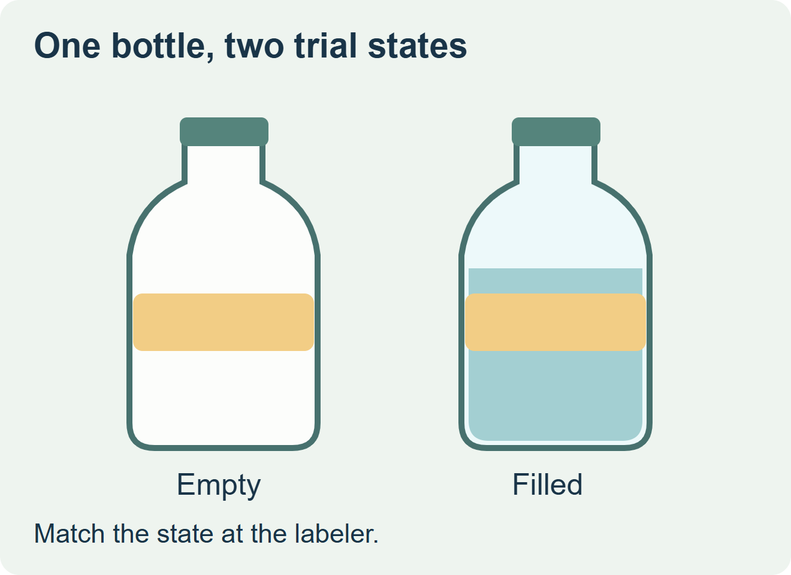
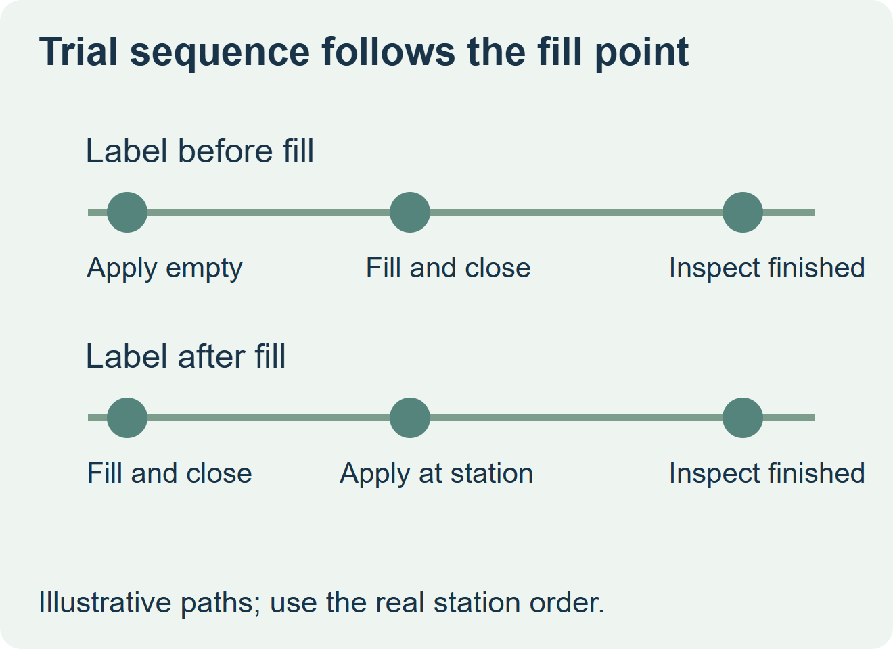

For the application trial, use the bottle in the state in which it enters the labeler. If you label before filling, qualify feed and placement on the empty bottle, then inspect that same label after filling and closing. If you label downstream, use a representative filled and closed bottle with the normal surface condition at the station. An empty sample is still useful for measuring the label panel and preparing an initial drawing.


Identify what changes at the labeler
Put an empty and a production-filled bottle of the same version side by side. Observe where guides, belts or the wipe-down roller touch them. A thin wall may deflect under contact when empty. With liquid inside, the bottle may present a firmer panel or behave differently through a transfer, particularly when it is partly filled. Check the actual behavior at the station before changing the die line or adhesive. Lancing’s guidance on fill state and labeling
After filling, look at the bottle surface at the actual point of application. Time between fill and labeling, a drying stage, residual liquid and condensation can change that surface. Keep a placement fault separate from an adhesion fault: record where the leading edge first lands, then look again after the agreed handling interval.
Choose the specimen before booking a trial
| Production route | Application specimen | Required follow-through |
|---|---|---|
| Label before filling | Production empty bottle with the actual neck, base and wall profile | Pass the labeled bottle through filling, closing and downstream handling. Inspect position, wrinkles and edge lift on the finished pack. |
| Label after filling and closing | Representative filled, closed bottle at the station’s normal temperature and surface condition | Check bottle movement, contact and placement at the intended speed. Reinspect after normal handling. |
| Off-site trial cannot use the drink | Agree a safe surrogate for the mechanical question | Document what it matches, such as mass, and what remains untested, such as wetness, temperature or slosh. |


Keep the label fixed while diagnosing the bottle
For a hypothetical still-juice line, an empty bottle might pass a hand fit but move under a side belt. Run the same label construction and unwind on representative samples before changing stock. If the landing point shifts with the bottle, investigate presentation with the equipment team. If placement repeats but the edge lifts on wet packages, take the real surface condition to the converter. Define pass criteria for both questions before releasing production.
Discuss the unresolved label requirement
Send the production bottle and closure details, the position of the labeler relative to filling, the actual surface condition, the label drawing, and the proposed roll and quantity. State whether representative filled packs can be tested on site. Review beverage label options and prepare a label specification inquiry. The contact page opens an email draft and lists email or WhatsApp for attachments. Supply, proof options, testing, pricing and timing require project confirmation.